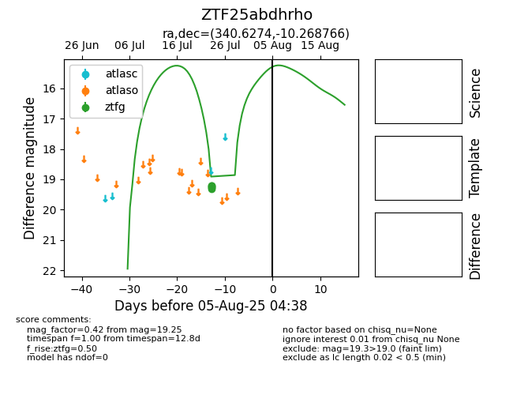

Target ZTF25abdhrho at 2025-08-05 04:38, see:
FINK: fink-portal.org/ZTF25abdhrho
Lasair: lasair-ztf.lsst.ac.uk/objects/ZTF25abdhrho
ALeRCE: alerce.online/object/ZTF25abdhrho
alt names
ZTF25abdhrho (ztf,fink)
coordinates:
equatorial (ra, dec) = (340.6274,-10.26877)
galactic (l, b) = (55.7572,-55.29191)
photometry
last ztfg=19.25
5 ztfg detections
